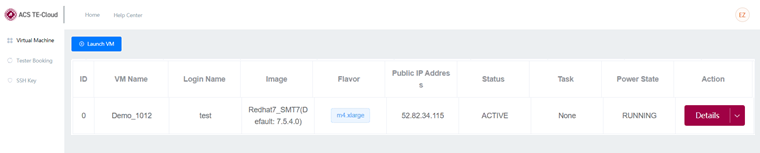
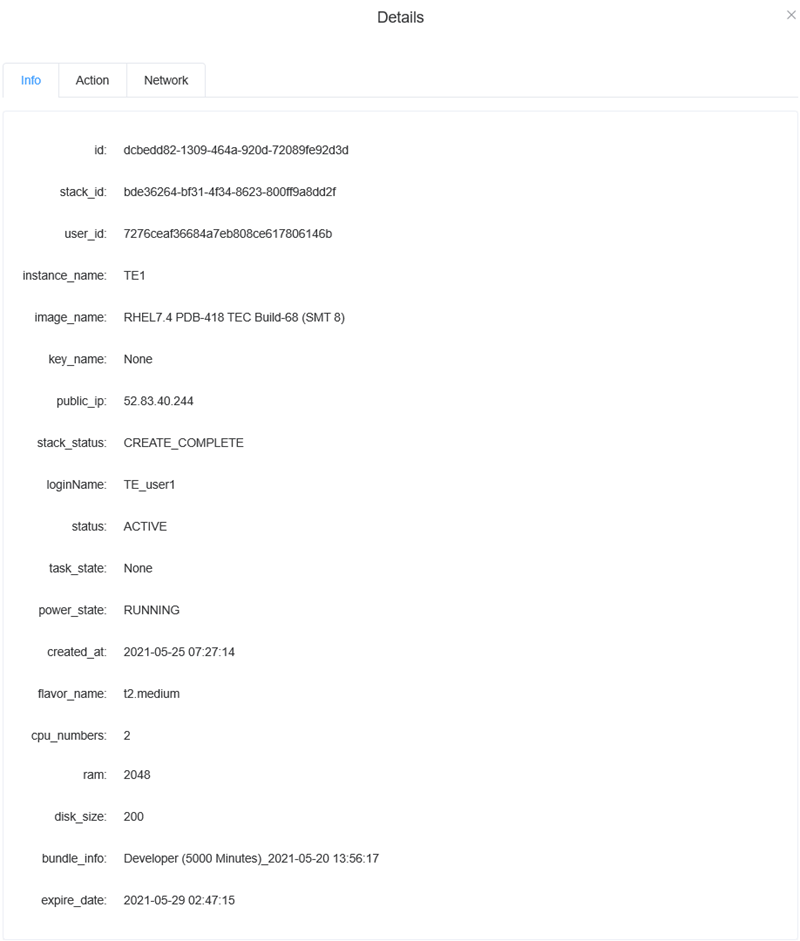
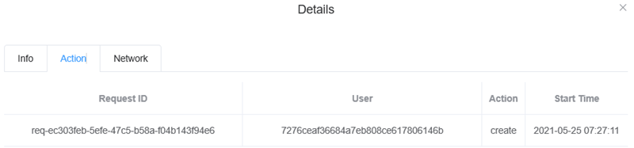
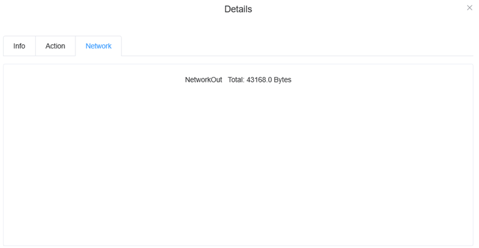
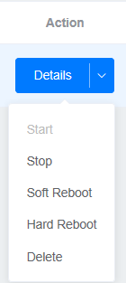

Virtual Machine page
This page lists the existing virtual machines and you can see the virtual machine information and create a new one.

The columns in the table are explained below:
- ID
- The index number of the virtual machine in the list.
- VM Name
- The name of the virtual machine as specified during the creation.
- Login Name
- The user name specified during the creation.
- Image
- The Linux development environment and SmarTest version you selected in the creation process.
- Flavor
- The
system
information.
- For SmarTest7: m4.xlarge
- For SmarTest8: r5.2xlarge
- Public IP Address
- The IP address of public network at which you can connect to the virtual machine.
- Status
- The
current working status of the virtual machine.
- ACTIVE
- BUILD
- SHUTOFF
- DELETED
- Task
- The
tasks and processes which are currently running on the TE-Cloud virtual machine.
- None
- Spawning: While the virtual machine is being created, it shows spawning while the Status is BUILD.
- Rebooting
- Deleting
- Power State
- The
power status of the virtual machine.
- RUNNING
- NO STATE
- SHUTDOWN
- Action
- Clicking Details opens the Details window
displaying
all
information about the virtual machine.
- The Info tab: Shows the configuration information of the virtual machine.

- The Action tab: Shows the historical actions performed on the
virtual machine.

- The Network tab: Shows the output network data flow.

Clicking the down arrow opens the menu of available actions to operate the virtual machine.

You cannot hard-reboot, delete, or stop the virtual machine. If you need to perform these actions, contact the TE-Cloud support team (PDL-ATC-TECloud@advantest.com).
- The Info tab: Shows the configuration information of the virtual machine.
Functional changes
- Introduced in SmarTest 7.6.2